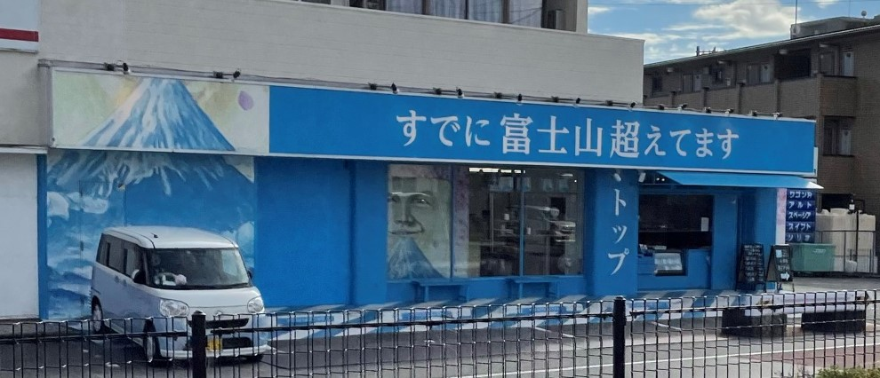
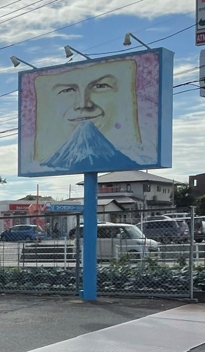
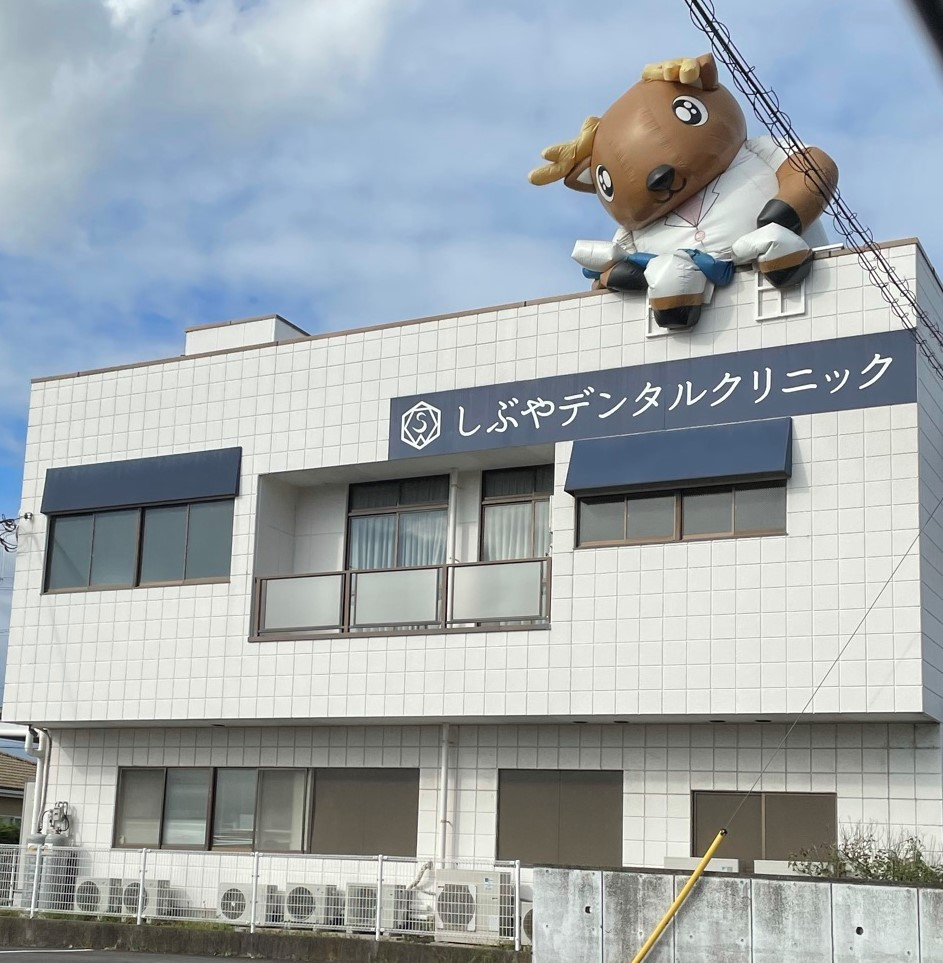
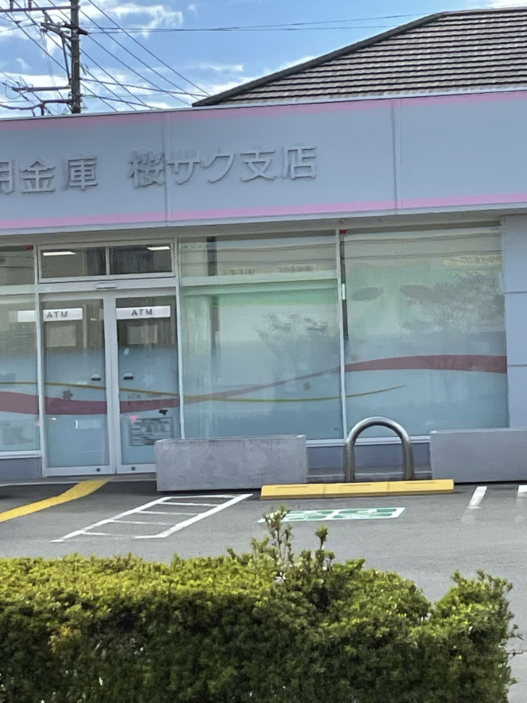

１.今回の講義について
今回の講義では観察とその意義についてを学習しました。
観察の中でも今回はフィールドワーク、考現学にフォーカスしてお話を聞きました。
ざっくりまとめると...
- 第一にメディアや自身の想像と実際の現場とのギャップを知るために行う
- 第二に自身の”当たり前にしていること”は”当たり前”ではないことに気付くため
- 実際に観察するときは無計画に、だらだら脱線しながら
- 又は、その事柄に関係するありとあらゆる情報を収集する
- 広く、柔軟に関心を広げ、問題発見をするのが考現学という観察法
観察の心得
- ヒトではなくネコの視点で物事を見てみる
- 人は概念や定義で見てしまう(＝意味づけ、役割で見てしまう)のでモノ自体に目を向けてみる
Ex.ゴミ箱…「ごみを捨てる箱」として役割付けをしてしまっている。本質は箱や籠といった「カタチ」にあるのでは？(先述のネコの視点の応用時！)
- 長期的にコミュニティに関わりながら観察する参与観察⇔コミュニティに参与せずに観察する非参与観察
- 先述の視点以外にも、時間的推移、五感、人が集まる場所等の着眼点
看板、サインの観察
- 10/10 静岡県長泉町 自身で撮影
高級食パン専門店の店舗名。
すでに富士山超えてますとあるが、一見すると一体何が富士山を超えているのかよくわからない。
個人的には食パンの絵で美味しさを比喩表現しているのではないかと考える。
この店舗を展開しているグループは特徴的な店舗名に定評があると以前どこかのテレビ番組で聞いたことがある。
因みに販売されている食パンは非常に好評の様子。


- 10/10 静岡県裾野市 自身で撮影
上に載っている鹿。
歯科だけに鹿といったところだろうか。
一度お世話になったことがあるが内装も設備も新しく、清潔感がありとても好感の持てる歯科であった。

- 10/10 静岡県長泉町 自身で撮影
地元の信用金庫の支店名。恐らく周辺一帯の属する「桜堤」という地名から想起されたものと考える。
他にもサクラ支店という支店名を持つ薬局などもある。
因みにその周囲に桜の木は無い。
